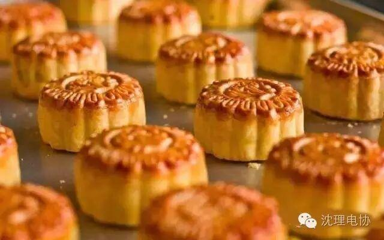

使用小程序
八月十五月儿圆，中秋月饼香又甜”，这句名谚道出中秋之夜城乡人民吃月饼的习俗。如今，月下游玩的习俗，已远没有旧时盛行。但设宴赏月仍很盛行，人们把酒问月，庆贺美好的生活，或祝远方的亲人健康快乐，和家人“千里共婵娟”。那么为什么会在中秋节这天吃月饼呢?
月饼，又称胡饼、宫饼、小饼、月团、团圆饼等，是古代中秋祭拜月神的供品，沿传下来，便函形成了中秋吃月饼的习俗。
月饼，在我国有着悠久的历史。据史料记载，早在殷、周时期，江浙一带就有一种纪念太师闻仲的边薄心厚的“太师饼”，是我国月饼的“始祖”。汉代张骞出使西域时，引进芝麻、胡核，为月饼的制作增添了辅料，这时便出现了以胡桃仁为馅的圆形饼，名曰“胡饼”。
唐代，民间已有从事生产的饼师，京城长安也开始出现糕饼铺。据说，有一年中秋之夜，唐太宗和杨贵妃爷望皎洁的明月，心潮澎湃，随口而出“月饼”，从此“月饼”的名称便在民间逐渐传开。
北宋皇家中秋节喜欢吃一种“宫饼”，民间俗称为“小饼”、“月团”。苏东坡有诗云：“小饼如嚼月，中有酥和怡。”宋代的文学家周密，在记叙南宋都城临安见闻的《武林旧事》中首次提到“月饼”之名称。到了明代，中秋吃月饼才在民间逐渐流传。当时心灵手巧的饼师，反嫦娥奔月的神话故事作为仪器艺术图案印在月饼上，使月饼成为更受人民青睐的中秋佳节的必备食品。
中秋节吃月饼据说始于元代，当时，朱元璋领导汉族人民反抗元朝暴政，约定在八月十五日这一天起义，以互赠月饼的办法把字条夹在月饼中传递消息。中秋节吃月饼的习俗便在民间传开来。英语拼写为：mooncake(月亮蛋糕)。
后来，朱元璋终于把元朝推翻，成为明朝的第一个皇帝，虽然其后清朝人入主中国，但是人们仍旧庆祝这个象征推翻异族统治的节日。
相传我国古代，帝王就有春天祭日、秋天祭月的礼制。在民间，每逢八月中秋，也有左右拜月或祭月的风俗。“八月十五月儿圆，中秋月饼香又甜”，这句名谚道出中秋之夜城乡人民吃月饼的习俗。月饼最初是用来祭奉月神的祭品，后来人们逐渐把中秋赏月与品尝月饼，作为家人团圆的象征，慢慢月饼也就成了节日的礼品。

月饼，最初起源于唐朝军队祝捷食品。唐高祖年间，大将军李靖征讨匈奴得胜，八月十五凯旋而归。
当时有人经商的吐鲁番人向唐朝皇帝献饼祝捷。高祖李渊接过华丽的饼盒，拿出圆饼，笑指空中明月说：“应将胡饼邀蟾蜍”。说完把饼分给群臣一起吃。
南宋吴自牧的《梦粱录》一书，已有“月饼”一词，但对中秋尝月，吃月饼的描述，是明代的《西湖游览志会》才有记载：“八月十五日谓之中秋，民间以月饼相遗，取团圆之义”。到了清代，关于月饼的记载就多起来了，而且制作越来越精细。
月饼发展到今日，品种更加繁多，风味因地各异。其中京式、苏式、广式、潮式等月饼广为我国南北各地的人们所喜食。